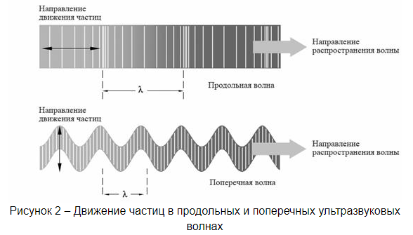
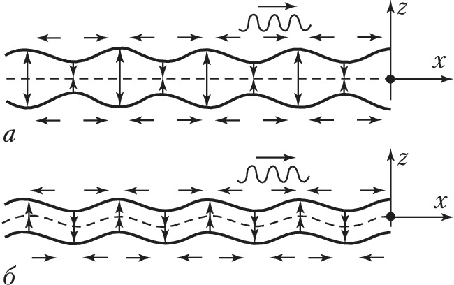

|
Содержание:
|
Разновидность ультразвуковых волн
-
Большинство методов ультразвукового исследования использует либо продольные, либо поперечные волны. Также существуют и другие формы распространения ультразвука, включая поверхностные волны и волны Лэмба.
-
Продольные ультразвуковые волны – волны, направление распространения которых совпадает с направлением смещений и скоростей частиц среды.
-
Поперечные ультразвуковые волны – волны, распространяющиеся в направлении, перпендикулярном к плоскости, в которой лежат направления смещений и скоростей частиц тела, то же, что и сдвиговые волны.

Поверхностные (Рэлеевские) ультразвуковые волны имеют эллиптическое движение частиц и распространяются по поверхности материала. Их скорость приблизительно составляет 90% скорости распространения поперечной волны, а их проникновение вглубь материала равно примерно одной длине волны
Волна Лэмба — упругая волна, распространяющиеся в твёрдой пластине (слое) со свободными границами, в которой колебательное смещение частиц происходит как в направлении распространения волны, так и перпендикулярно плоскости пластины. Лэмба волны представляют собой один из типов нормальных волн в упругом волноводе – в пластине со свободными границами. Т.к. эти волны должны удовлетворять не только уравнениям теории упругости, но и граничным условиям на поверхности пластины, картина движения в них и их свойства более сложны, чем у волн в неограниченных твёрдых телах.


|